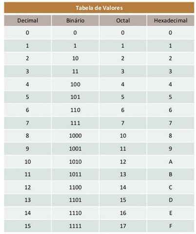

SISTEMAS NUMÉRICOS |
Concepto Fundamental
El sistema de base 2 o binario es un sistema posicional donde el valor de cada dígito depende de su posición, y solo existen dos símbolos: 0 y 1.
Es la base de la computación porque los circuitos electrónicos funcionan con dos estados: paso de corriente (1) o ausencia de ella (0).
Cómo se construye un número (Potencias de 2)
En el sistema decimal (base 10), cada posición hacia la izquierda vale 10 veces más (1, 10, 100, 1000). En el binario, cada posición hacia la izquierda vale el doble (1, 2, 4, 8, 16, 32...).
Las posiciones se leen de derecha a izquierda empezando por el cero:
2^0 = 1, 2^1 = 2, 2^2 = 4, 2^3 = 8, 2^4 = 16, 2^5 = 32, etc.
Ejemplo de Conversión
Para convertir el número decimal 13 a binario, se descompone en potencias de 2:
13 = 8 (2^3) + 4 (2^2) + 0 (2^1) + 1 (2^0) → 1101 en binario.
En este caso, el dígito más a la izquierda (1) representa 8, el siguiente (1) representa 4, el siguiente (0) representa 0, y el último (1) representa 1.
